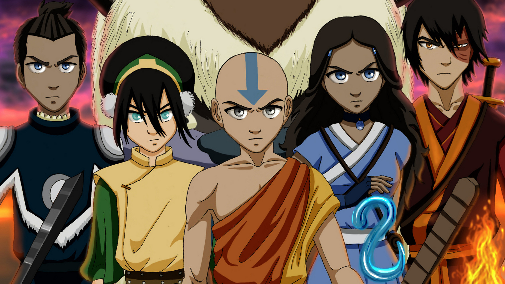

About Toph
Toph is awesome! She is a blind earthbender who joins Avatar Aang and his friends to master all 4 elements.
Toph and her friends!
Toph's Characteristics
- She is blind.
- She's a bad ass!
- She is an earth bender.
Toph's Friends
Toph has awesome friends. Her close friends are Aang, Katara, and Sokka. She joins them to help Aang master all 4 elements and fight the firelord Ozai. Click on the links below to read more about them.